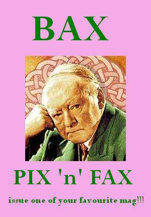

Saturday, April the 29th, 2006
back to: title, date or indexes
Hooting Yard continues its mission to raise the tone of the monthly magazine market. From next week, hoping to oust all that drivel like Beer & Blokes and Handbags For Fluffyheads from your newsagent's shelves, we will be launching an exciting new title devoted entirely to the composer Sir Arnold Bax (1883-1953). Issue one has an exciting article about Sir William Walton's attempt to “knock Bax off the map” with his own first symphony, including a special mezzotint reproduction of the map itself from noted mezzotintist Rex Tint. Plus there is a chance to read some of Bax's pseudonymous 'Dermot O'Byrne' poems, a botanical description of The Garden Of Fand, and some swan recipes from Bax's successor as Master of the Queen's Music, that scamp Sir Peter Maxwell Davies.
